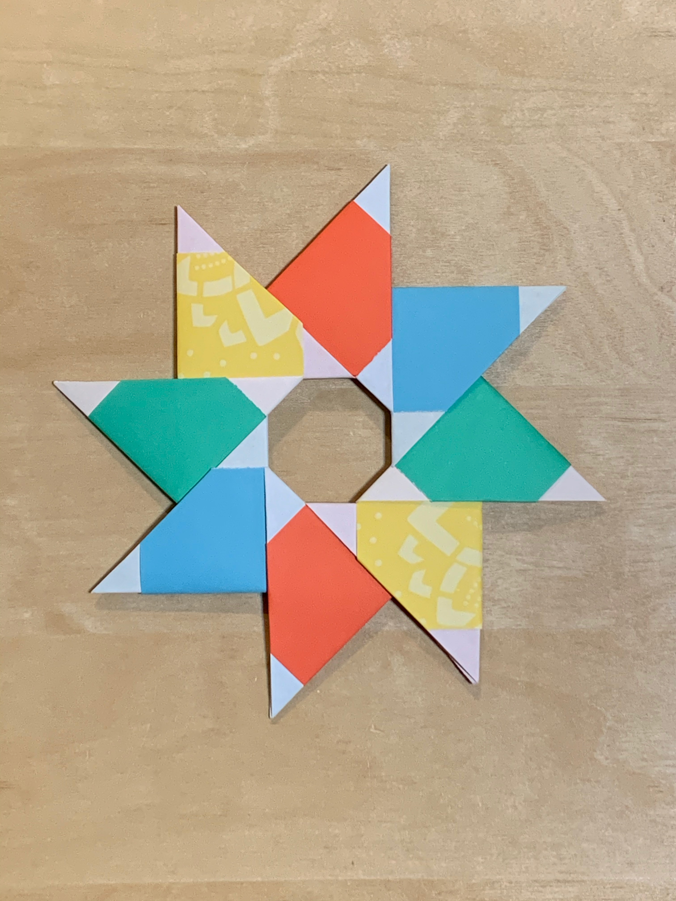
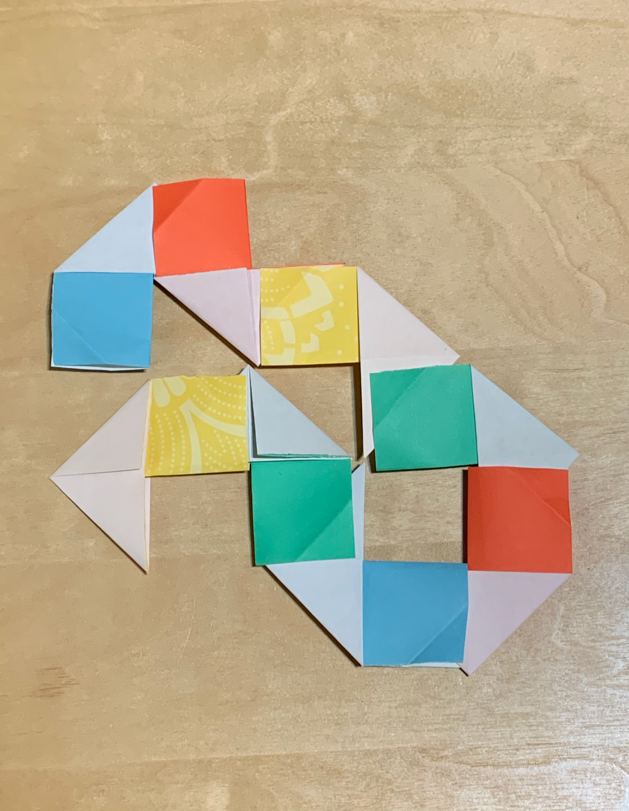

FIRST PASS: Exercise in Testing Some Origami Modules and 2D Tesselations
Artist Statement
I’ve done origami before, but this was the first time that I tried to do a modular piece. I followed a video tutorial called Petra Star. The star consists of 8 modular pieces that, if rearranged, can be used to create a different shape as shown
on the second image.


For the tessellations assignment, I used...
SECOND PASS: A group exercise with Tesslation and Modularity with some 2D shapes
Artist Statement
For the second phase, our group collaborated to create a tessellation using our own unique design. We started with a standard piece and each person in our group added a design to the standard piece. We inverted the shape of our standard piece which allowed us to connect our designs together. To make our pieces fit, two people in our group used two designs that match their parts, while the other two used the remaining designs which allowed all our pieces to tessellate. Being proficient in Adobe Illustrator made this project more enjoyable because I was able to play around with organic shapes using the pen tool. I had fun working with my group because we were able to put our heads together as we brainstormed about the patterns and made sure that our designs fit together.
Phase 2 -- 3D Fastener BrainStorming Designs, Mockups and design approaches
Artist Statement
...